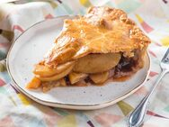
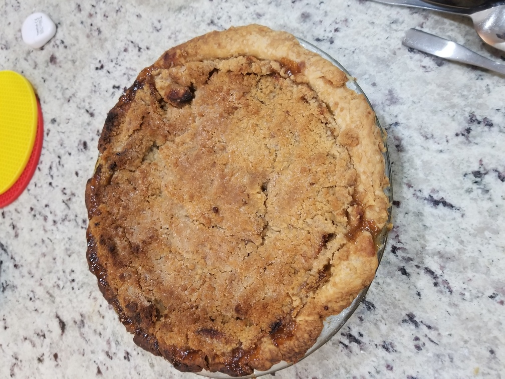
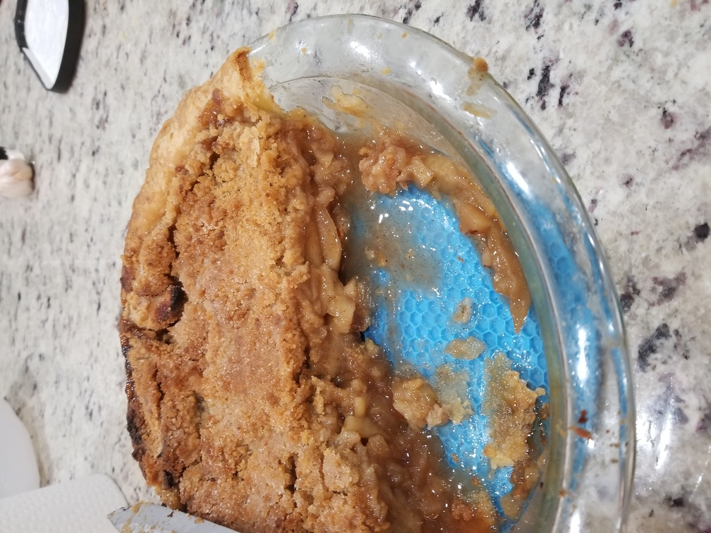

Apple Pie
Originally from: Stella Parks (Serious Eats)

Ingredients
Filling
- 225 g light brown sugar (1 cup)
- 2 1/2 tsp cinnamon
- 3/4 tsp salt
- 1/2 tsp ground ginger
- 1/4 tsp nutmeg
- 1/4 tsp ground cloves
- 50 oz sliced granny smith apples (around 8 large apples)
- 25 g tapioca starch (1/4 cup)
- 1 pie crust
Egg Wash
- 1 large egg
- 1 egg yolk (optional)
- 1 Tbl heavy cream
- pinch of salt
Ducth Apple Pie Topping
- 100 g all-purpose flour
- 125 g light brown sugar
- 6 Tbl unsalted butter
- 1/4 tsp salt
- 1/2 tsp cinnamon
Directions
- Combine all filling ingredients except tapioca in gallon ziplock bag. Let sit at room temp for 3 hours. (Can be kept in fridge after up to 8 hours)
- Cut up butter for topping and then combine all other topping ingredients.
- Add tapioca starch and combine. Pour filling into pie crust.
- For Traditional: Top with outer crust and loosely crimp edges. Place in fridge 30 - 60 minutes, then brush top with egg wash. Cut vents into top of pie.
- For Dutch Apple: Top with topping. Place in fridge for 30 - 60 minutes.
- Bake in 400° oven for about 75 minutes (center should measure 195° when done)
- Let cool before serving.
Notes
-
2020-11-25 - I've made this pie the traditional way before to good results. I decided to try to make with a dutch apple topping and also turned out well. Recipe calls to dump all apples and juice in, with the idea the tapioca with help thicken into nice sweet syrup. Not sure if dutch topping changed cooking, but found ended up with inside a little on juicy side when I added in all the juice - was not overly soggy, but did not seemed runny than before.

